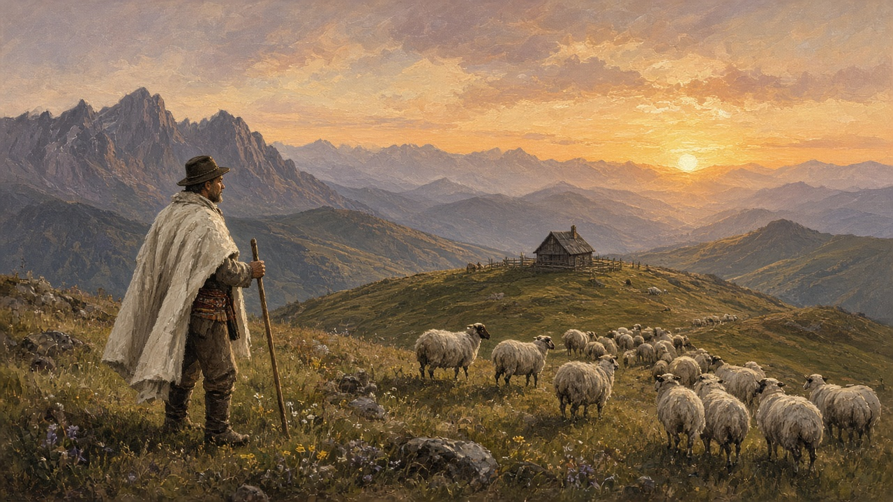

Shepherds
Ciobanii. Not a costume on a stage. The people who still take the flock into high grass and sleep where the sheep sleep until autumn brings them down.

The cioban
A cioban is a shepherd, and the word is older than any job listing. He walks. He counts. He knows which ewe is lame before you do. In a mountain commune the work is still hired for the season: a man, sometimes two, paid in money or in a share of the cheese, living up at the fold from the first real grass until the nights turn mean. The baci is the one who runs the stână — the fire, the milk, the accounts. The ciobani stay with the animals. Town talk turns them into a type, a hat and a stick. Up on the plai they are a watch that does not come off. Women milk and make cheese at some folds; the word ciobancă exists. Most of the night watch you still hear spoken of as men.
The stână
The stână is the sheepfold: a hut or two, a pen, a fire that never quite goes out, and a smell you do not wash off in one evening. It sits on a pășune, a high pasture, often a long walk from the last gate of the sat. There is a place to milk, a place to rest the caș, and a bench that is also a bed. Dogs sleep across the doorway. Electric wire has arrived on many of these slopes — the same fence the wildlife page mentions, against bear and wolf — but the order is older than the battery. Morning milking. Midday shade. Evening count. If you have not stood in that yard at dusk, with the bells and the smoke, you have not met this country at its oldest job.
Up in spring, down in autumn
Transhumanța is the old movement: flocks walking to grass, then walking home. The short version is still ordinary. After Sfântul Gheorghe, April 23, the year outside is said to open and the sheep go up — that hinge is on the year. They stay in the high grass through the summer. Around Sfântul Dimitrie, October 26, they come down. Coborârea oilor, the bringing of the sheep down, is a day the village still notices. The road fills with animals, dust, and dogs who have not seen a street in months. Children watch from gates. Someone complains about the mess and someone else says it is how autumn used to sound.
The long version — weeks on the road, from the Sibiu margins toward the Danube plains, or from the mountains into another county — survives in memory and in a few households that still walk it. Most flocks now take a truck for the far stretch, or they never leave the commune. You do not need a map of every route. You need the habit of asking whether this flock still climbs, and when it is due back through the village.
Dogs that mean it
These are not the dogs that fetch a ball. A ciobănesc lives with the sheep. The Carpatin, the Mioritic with its long coat, the Bucovina dog — names people argue about at a show, and on the mountain they are simply the dogs. Large, loud, and kept close to the flock so a lup or an urs thinks twice. They eat at the stână. They bark at a stranger long before you see one. The wildlife page is right: they mean it. A visitor who wants to pet them has not understood the job. At night they are the first news of whatever is on the ridge.
Milk into cheese
Summer is milk. The first cheese is caș, fresh, barely salted, eaten while it still remembers the animal. What is pressed and put away becomes brânză: telemea in brine, the kind that travels to market; brânză de burduf, packed in a sheep’s stomach or in pine bark until it bites. Urdă is the whey cheese, milder, made from what was left after the caș. Jintiță is the sour whey some people still drink at the fold. The baci’s reputation sits in that room. A household that sent sheep up in May expects cloth-wrapped rounds back in October. Harvest fills the cellar with jars; this is the animal half of the same shelf, made on grass instead of in the garden.
The fluier at the fold
Evenings are long and the radio does not always reach. A fluier — the wooden flute, a few holes, made to carry in a coat — is still the instrument of the sheepfold. The music page names it among the others. Up here it does not start a hora. It fills the hour after the count, a slow line that may be a doină or only a man keeping himself company. Bells on the sheep, a dog shifting, wood on the fire. That is the band. You will hear a nai on a record and think of shepherds; what actually sits in a pocket on the plai is usually this smaller, holed thing. When the flock comes down, the flute comes down with it, and the yard gets the rest of the year.